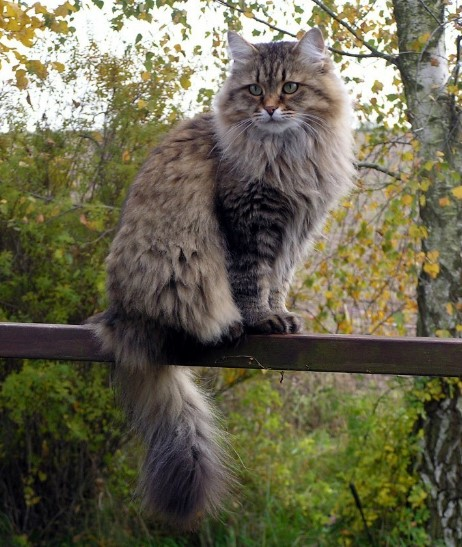
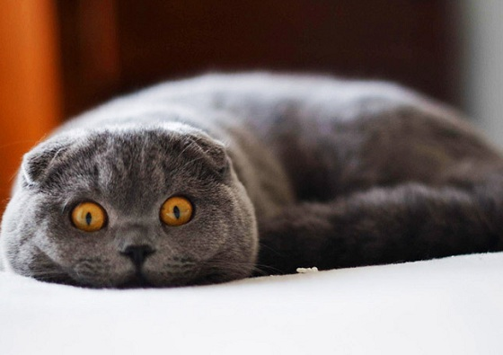
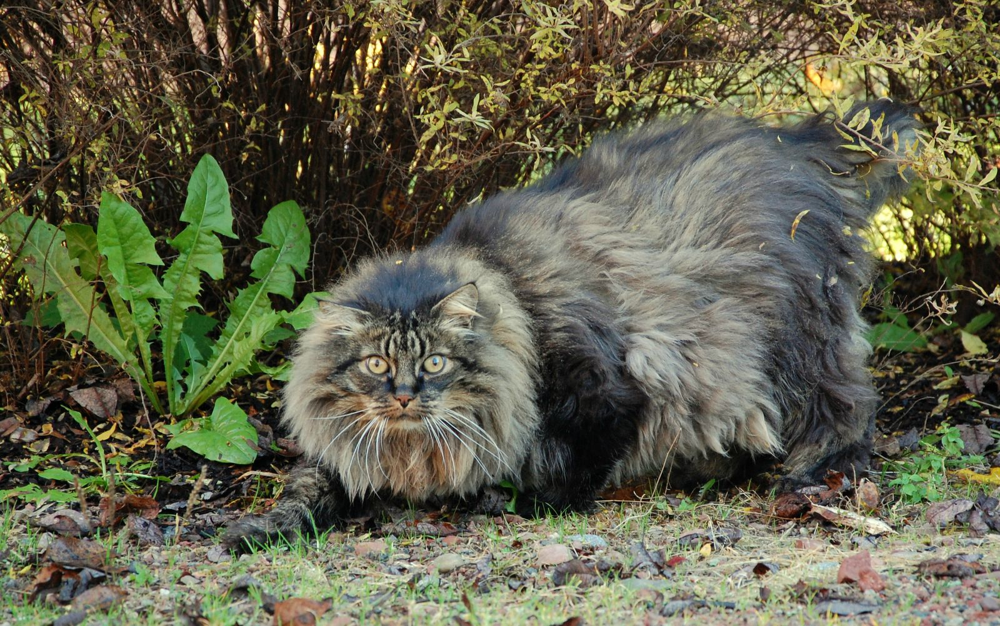
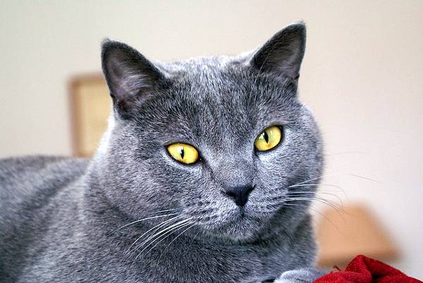
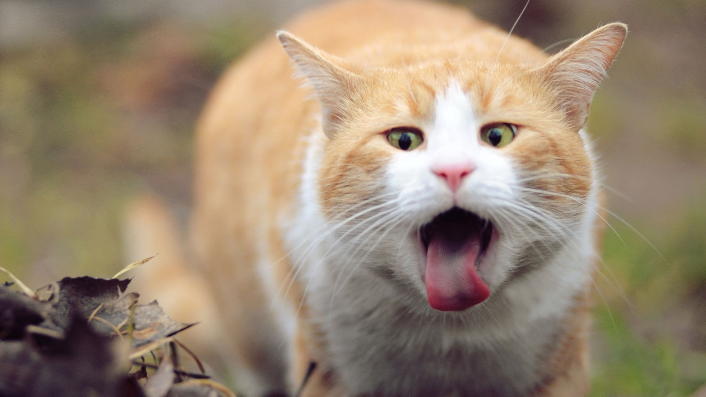
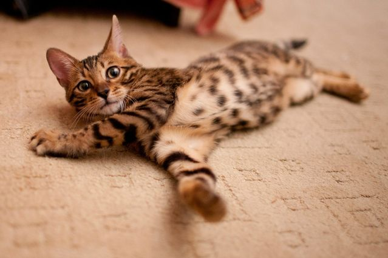
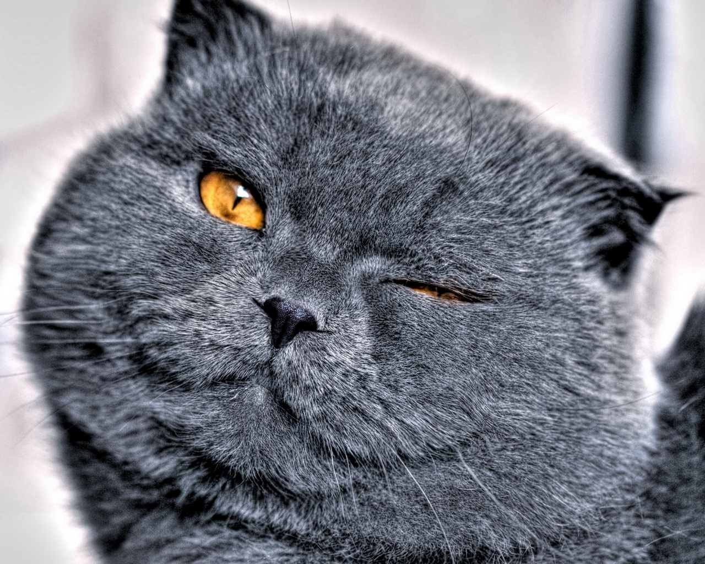

Коты

Сибирские кошки – аборигенная порода, практически сформировавшаяся естественным
путем. Отечественным фелинологам оставалось лишь отточить
до безупречности и сертифицировать породу.

Шотландская вислоухая кошка или скоттиш-фолд (англ. Scottish Fold) — порода
кошек с характерным строением ушных раковин, которые загнуты
вперёд и вниз. Причиной необычной внешности этих кошек
является генная мутация. Если у котят породы шотландская
вислоухая к определённому возрасту уши остаются прямыми,
то они получают название шотландские прямоухие (скоттиш-страйт).

Норвежские лесные кошки отличаются крепким телосложением и большим размером.
Однако эти гиганты обладают мягким характером и хорошими
манерами и их не просто спровоцировать на плохое поведение.
Норвежские лесные кошки это сочетание любви и терпимости,
даже к большинству непослушных детей и собак.

Он отважен, как Д’Артаньян, молчалив, как звезда немого кино знаменитый
Макс, красив, как Ален Делон с картинки, но по тому, как
выглядит шартрез и какой у него характер – это, скорее,
милашка Депардье. Кто-то, впервые увидев Депардье шартреза,
может ошибочно принять его за британца.

Голодный кот Барсик хочет кушать! Купите его и накормите! Пожалуйста!

Ханаанская кошка или Канаани – это потомок Степного пятнистого кота, проживающего
на нашей планете более 10 000 лет. Именно Степной кот был
приручен человеком в древние времена и от него произошли
практически все аборигенные породы, в том числе и дикая
Ливийская кошка, участвовавшая в бридинговой программе
по выведению Канаани. Это невероятно! Более 979 уникальных
ДНК пар являются производными от мутаций и скрещиваний
Степного кота и других представителей кошачьего мира.

Отдам в хорошие руки!